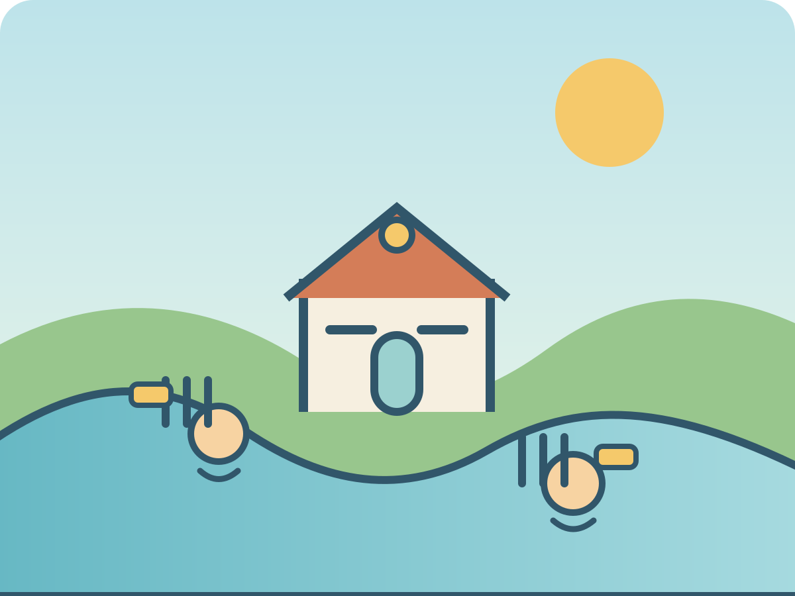

A calm flow puzzleWillow river station
River Gates
Read the water plan, toggle three gates, and send the right flow to every animal garden.
Water notebook
Choose a water plan
Water plan
Meadow sluice
Flow settled
Waking the river…

A calm flow puzzleWillow river station
Read the water plan, toggle three gates, and send the right flow to every animal garden.
Water notebook
Water plan
Flow settled